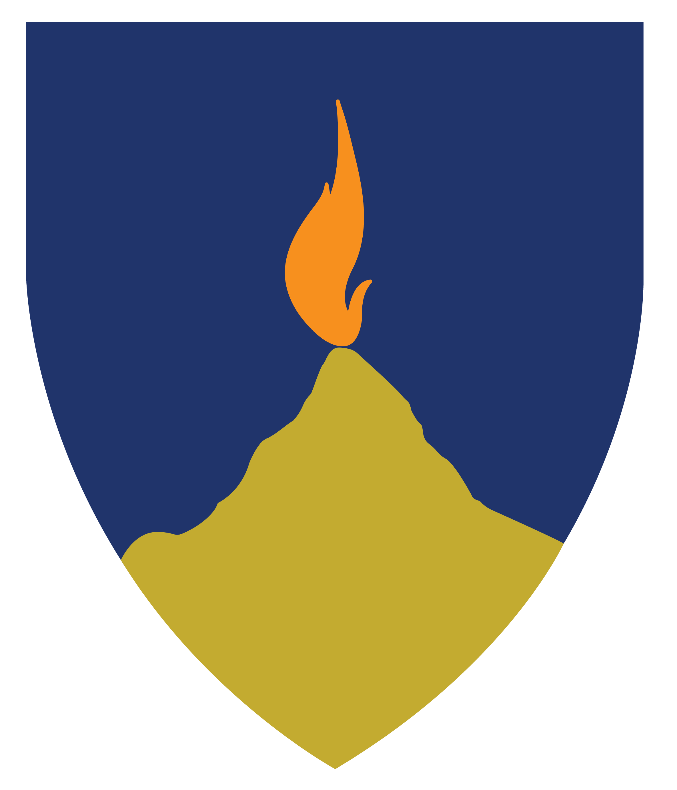
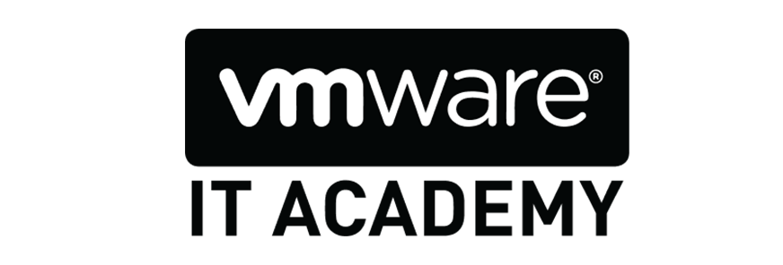
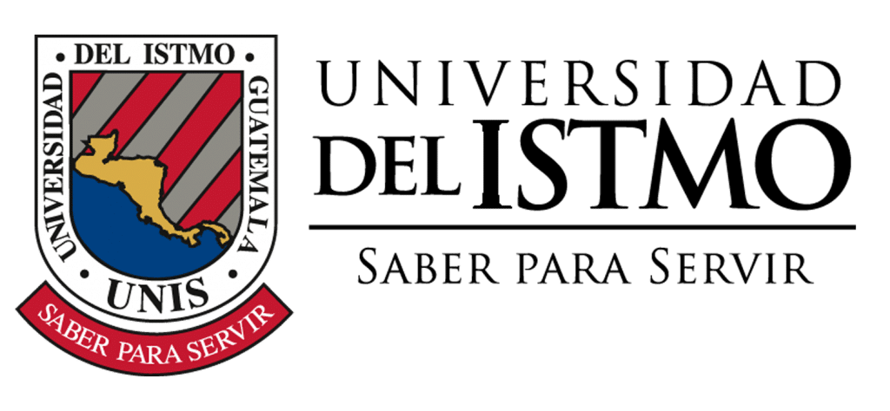
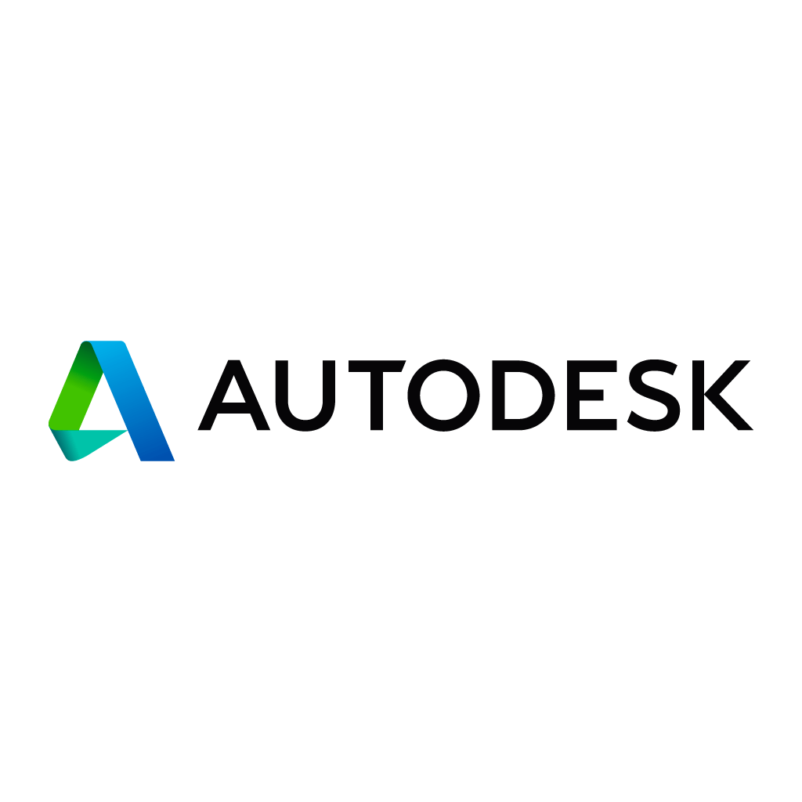
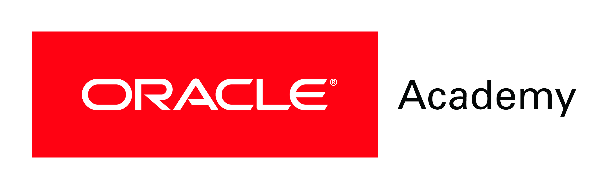
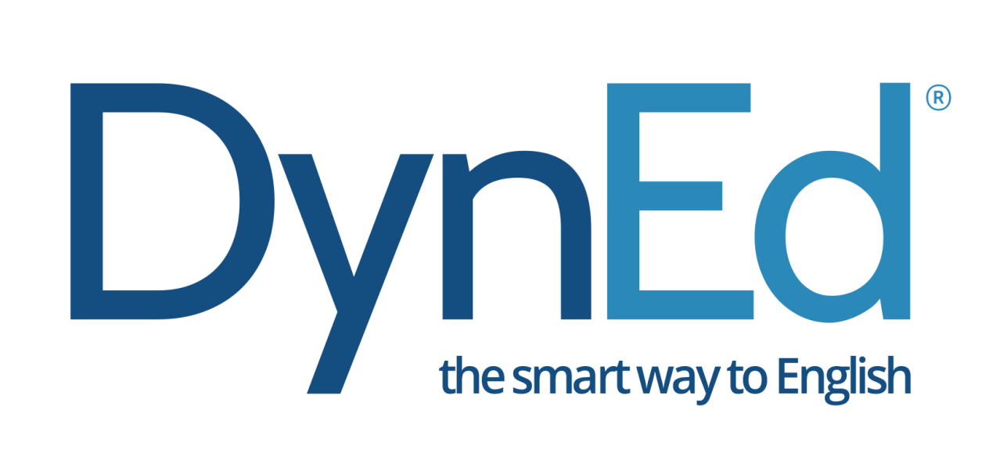
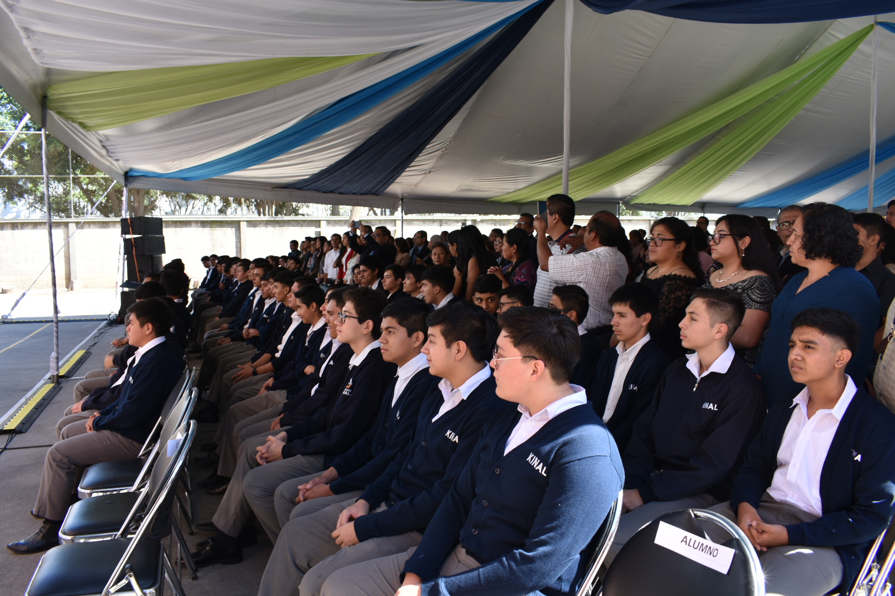
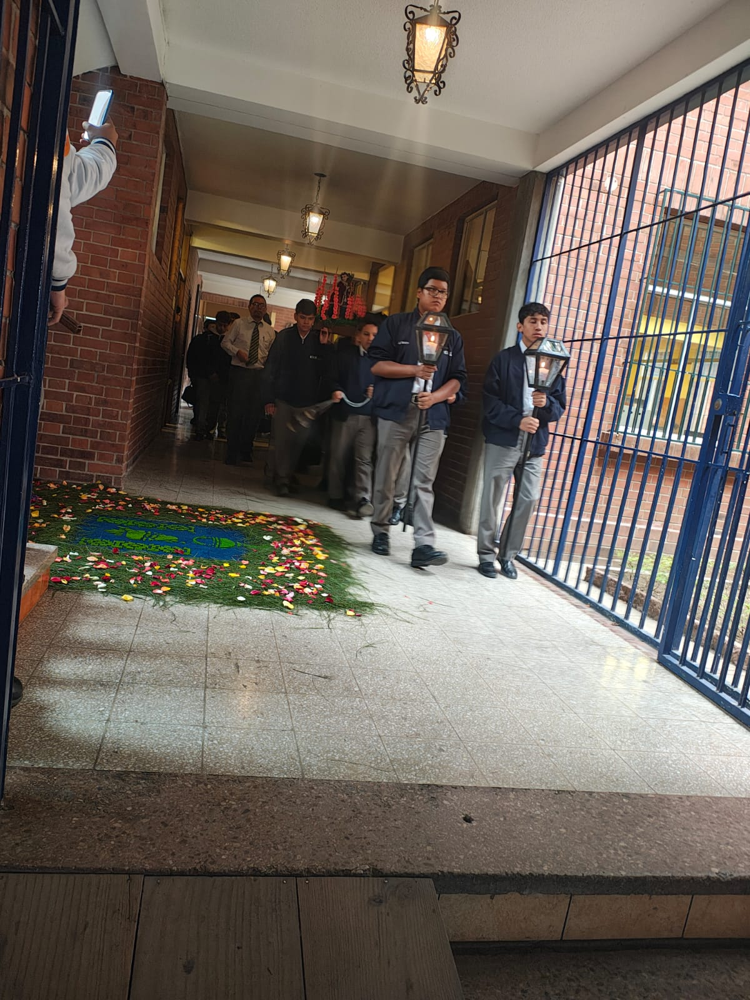
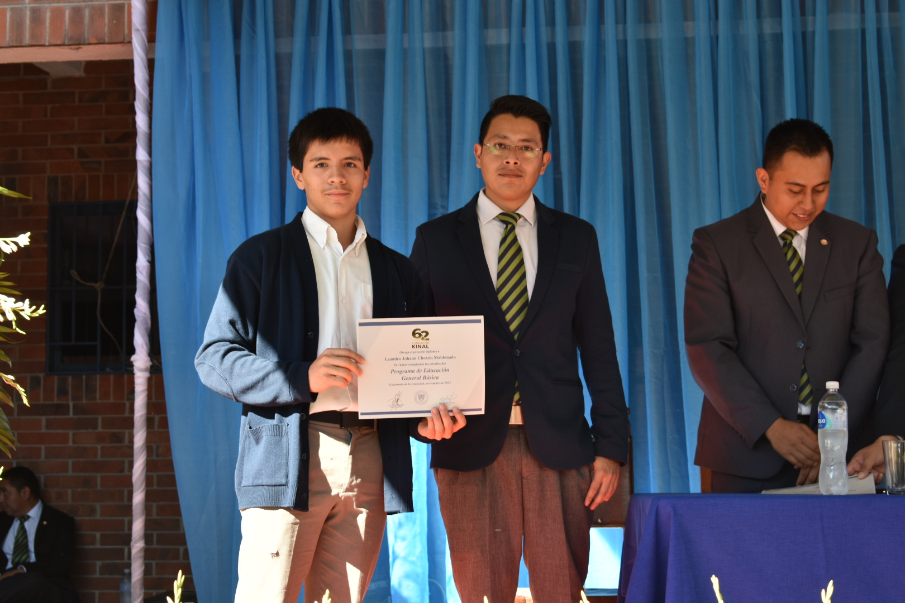
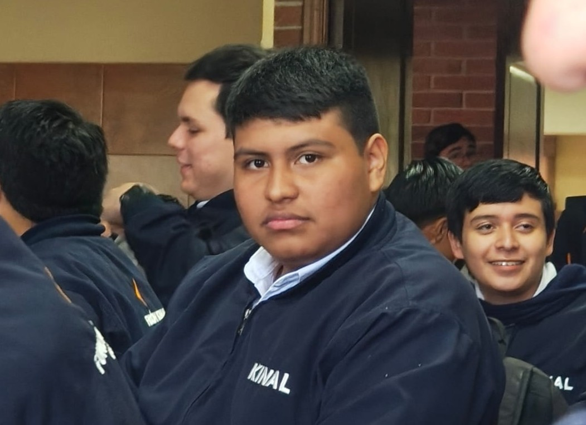

Somos un centro educativo privado, no lucrativo, cuya misión es “Formar a jóvenes y adultos a través de una educación integral, con énfasis en las áreas técnicas y su trabajo, su familia y la sociedad”. Su propuesta formativa ofrece un camino educativo desde los 12 años hasta el Técnico Superior Universitario.


Ser líderes en la formación técnica, tecnológica y humana de la región, brindando una excelente preparación integral a jóvenes y adultos, logrando su superación personal y profesional.
Formar a jóvenes y adultos a través de una educación integral, con énfasis en las áreas técnicas y tecnológicas, influyendo positivamente en su trabajo, su familia y la sociedad.
• Visión cristiana de la vida.
• Respeto a la dignidad de la persona.
• Espíritu de servicio.
• Trabajo bien hecho.
• Libertad personal responsable.
Programa de Educación General Básica para todos aquellos jóvenes que buscan una orientación técnica y excelencia académica, de 11-13 años
Jovenes de 15-18 años se preparan durante 3 años se prepara al joven de forma técnica y académica, el egresado estará listo para trabajar en el ramo técnico de la especialidad que eligió estudiar
Contamos con más de 30 especialidades técnicas y tecnológicas que pueden favorecer tu crecimiento y/o tu inserción laboral.
Podemos diseñar conjuntamente el programa de formación profesional que mejor se adapte a tus necesidades de capacitación.
Podemos diseñar conjuntamente el programa de formación profesional que mejor se adapte a tus necesidades de capacitación.

Durante 2023 recibimos más de 600 solicitudes de trabajo para nuestros antiguos alumnos.
TRABAJOSCada donación que haces ayuda a la educación de un joven guatemalteco de escasos recursos a tener una educación de calidad
APOYANOS!!